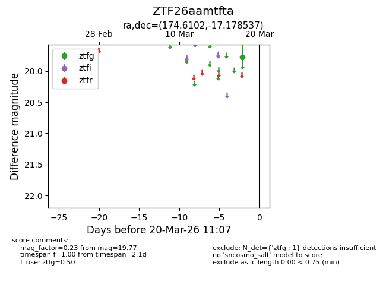
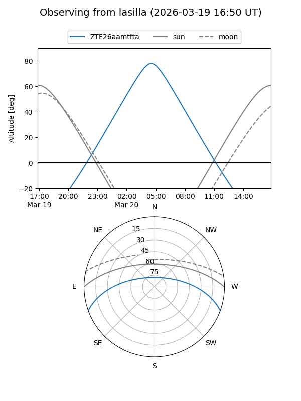
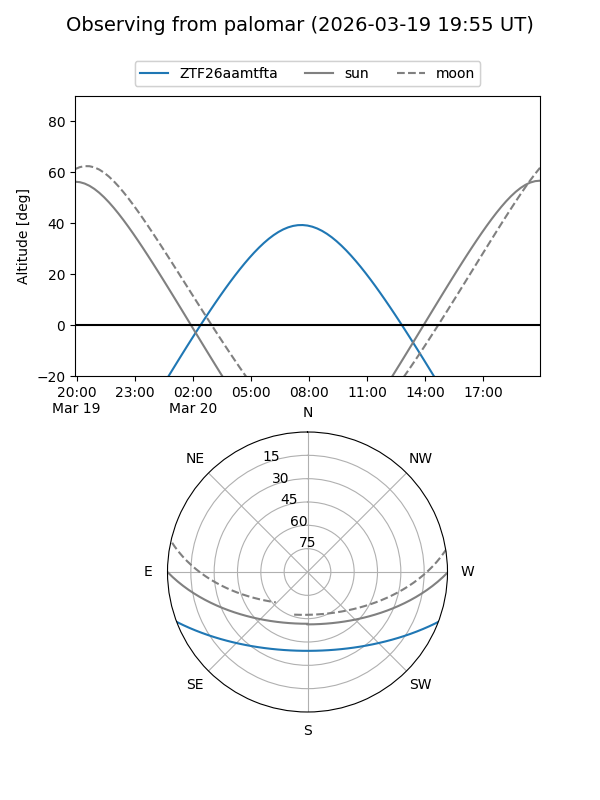

ZTF26aamtfta
Target ZTF26aamtfta at 2026-03-20 11:09
Aliases and brokers:
FINK: link
Lasair: link
ALeRCE: link
alt names
ZTF26aamtfta (ztf,fink_ztf)
Coordinates:
equatorial (ra, dec) = 174.6102,-17.17854
equatorial (HMS+DMS) = 11:38:26.46,-17:10:42.73
galactic (l, b) = (279.0774,+42.28690)
Flags:
Photometry:
last ztfg=19.77
1 ztfg detections
Lightcurve

Visibility


Additional plots